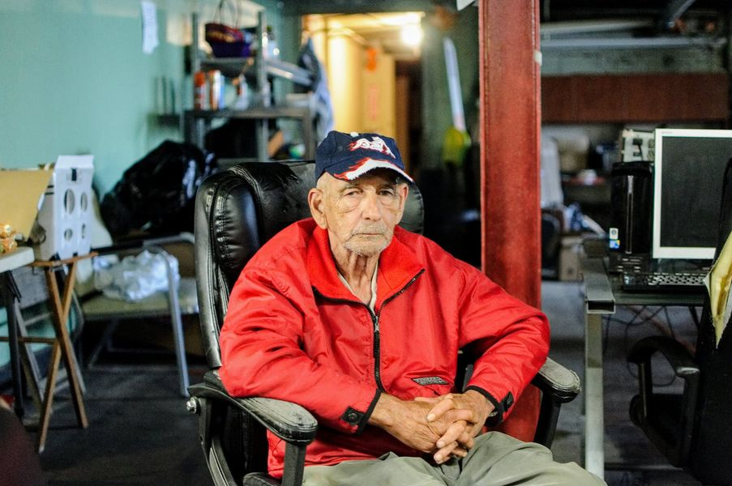

Timeline photos
@[1118405480:2048:Lerryn Campbell] from @[1640810622880440:274:The Homeless Charity and Village] just called to tell me that she got to see John, pictured here. He's in an assisted living facility and doing REALLY WELL.
He lived in our tent village for quite some time. He was one of the last people to get housed because people with disabilities have very few options.